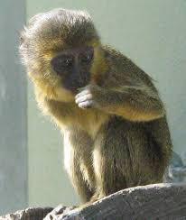

Úzkonosí (Catarrhini), nebo také opice úzkonosé nebo opice Starého světa (ploskonosým se zase říká opice Nového světa), je jedno ze dvou oddělení infrařádu opic (Simiiformes). Druhým je ploskonosí, opice ploskonosé, neboli opice Nového světa. Někdy je pro zařazení ploskonosých a úzkonosých používána taxonomická kategorie parvorder nebo falanx, zde je použito české pojmenování oddělení.
Při popisování chování a vzhledu bude dále vědomě vynechán popis rodu Homo, tj. člověka.
Na první pohled nejzřetelnějším rozlišovacím znakem úzkonosých je úzká nosní přepážka mezi vysokými vnějšími nozdrami směřujícími dolů. Při čelním pohledu, odmyslíme-li různá ochlupení vypadá jejich hlava štíhlejší, při bočním je zase kratší. Mají výrazné nadočnicové oblouky, zorná pole obou očí se překrývají. Jejich čelisti jsou delší a mají zubní vzorec shodný s lidským 2,1,2,3 (2 řezáky 1 špičák, 2 třenové zuby a 3 stoličky). Dolní řezáky mají vertikální polohu. Kost čelní je spojena švem s kostí klínovou. Přední končetiny (u většiny i zadní) mají dobré uchopovací schopnosti a až na výjimky (guerézy) pohyblivý palec. Drápy na prstech se proměnily v nehty, vyjma gibonovitých. Ocas úzkonosých není chápavý a mnozí ho mají redukovaný, gibonovití a hominidi.